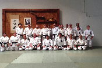
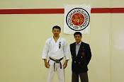

Please join us in Room B1 to visit and watch a training session.
Last updated on: 8/26/2013
Welcome Fall 2013 Matadors!
Did you know that some of the best Karate instruction in California can be experienced in a small gym right here at CSUN?
Perhaps you have always been interested in the martial arts but could not find a good school or a legitimate instructor.
Look no further, because you search has brought you to just the right place!
The CSUN Karate Club is one of the oldest university Karate clubs in California, with our history going back to the 60s. We
have been very lucky to have had the continuous privilege of being taught by one of the top Karate instructors in the world,
Hiroyasu Fujishima Sensei, 8th Dan SKIF. We present a great opportunity to CSUN students to learn Karate personally from
Fujishima Sensei, who still teaches every single class with full vigor and passion, even as he approaches his 70s!
Karate develops a strong, flexible body, and simultaneously instills a sense of discipline, diligence and perseverance through
participation in intense training sessions! You might even break a sweat from just observing one of our trainings!
To those who are curious to train with us in Shotokan Karate, we invite you to browse around our site. We train
four times a week (see Calendar) in various locations. You're welcome to stop by and observe (see Location), but remember
to respect the rules and not disturb the practice.
History
Established in 1969, the C.S.U.N. Karate Club is a student run dojo that teaches traditional
Shotokan Karate. Our goal is to strive for perfection in the art of karate by focusing on the triad of Shotokan:
Kihon (basics), Kata (forms), and Kumite (sparring). Besides our regular training, we have proudly represented
CSUN in various karate tournaments.
We offer the highest quality instruction in the art
of Shotokan Karate-do and welcome all levels of students from beginning to
advanced. We are directly affiliated with the Shotokan Karate-do International
Federation (S.K.I.F.). Our heritage continues to bring life and fulfillment to
our karate training. Our classes are traditional, highly disciplined,
challenging, and authentic! All instruction is given by qualified black belt
instructors under the direct supervision of our head Sensei: Hiroyasu
Fujishima. To the greater benefit of all of our students, most classes are lead
directly by Fujishima Sensei.
A world of opportunity for improved mental and physical health can be gained from a
quality karate club such as ours. Karate training opens the doorway to building greater self-confidence. The benefit of
self-defense is obvious, but it is only a small part of what can be gained. Karate builds stamina, strength, flexibility,
and coordination. People can also learn and develop calmness, greater alertness, patience, and self-discipline.
Dojo Rules & Etiquette
- Arrive at least 5 minutes before class
- Wear the white gi (uniform) if you intend to train
- Shoes, socks, or other forms of footwear are not permitted on the dojo floor
- Safely put away any jewelry before training
- Maintain good hygiene. Finger nails and toe nails should be clipped
- Discard chewing gums and similar items before coming for practice
- Bow before entering or leaving the dojo
- Bow when addressing higher belts or when you're being addressed
- Refrain from profanity or loud talking in the dojo
- Show common respect and courtesy to other dojo members
- If you show up for training, prepare to be there for the entire duration of the session. It is disrespectful to walk out while training is still in session
- Direct all training related questions to the black belts and/or Fujishima Sensei. Only they are qualified to teach
- If you arrive late, bow and sit down in meditation at the entrance of the dojo. You will join the training only when signalled by Sensei to do so
- Train with spirit and conviction
- Don't forget to ACTUALLY enjoy your training
Karate is an art that requires patience and discipline. Remember that even the great Masters continued to better themselves throughout their lives. Do not feel
discouraged if you can not perform a move or a technique correctly. You will most certainly improve with time. Take advantage of all our meeting times and train at
your best of abilities. Do not hesistate to raise your hand and ask questions if you need help or clarification.
Hiroyasu Fujishima (Sensei)
Fujishima Sensei's karate career began in Sapporo, Japan in 1956. During his college years, he studied
karate at Takushoku University, which is Japan's leading collegiate karate training center.
His karate qualifications include:
- Hanshi (SKIF)
- Hachi-Dan (8th Degree), SKIF
- Hachi-Dan (8th Degree), Hobukan International Federation
- International recognition as a certified class "A" instructor, examiner and referee
- Served as a technical advisor to the motion picture industry
- Taught self-defense to the Los Angeles Police Department
Fujishima Sensei is a professor at California State University, Northridge (C.S.U.N.), where he teaches karate as part of
the university curriculum. The classes he teaches are:
-
Karate I (KIN 130A)
-
Karate II (KIN 130B)
-
Taekwondo (KIN 131A)
-
Personal Defense (KIN 151A)
He is the highest ranking black belt in the Americas within the Shotokan Karate-do International Federation (S.K.I.F.).
In May of 2002 he recieved the title of "Hanshi" from the Japanese government. This is the highest title awarded
for a lifetime dedicated to excellence in the martial arts. It denotes an exemplary person; a model to be followed.
He is only the twenty sixth person to recieve this award in history.
The aggregation of 50 years of karate excellence has only humbled Fujishima Sensei further. He insists on teaching everyone, regardless of
age, belt, or rank, and imparts his wisdom and knowledge without judgement or pretense.
"Practice doesn't make perfect. Perfect Practice makes Perfect." - Hanshi Fujishima
Training is held normally in Redwood Hall, Room B1 (basement level). Please see 'Calendar' for the most current practice schedule.
See the links below for larger views of the locations.
View Larger Map
Map of Room B1, Redwood Hall
Training Schedule, Fall 2013
| Day |
Time |
Skill Level |
Location |
| Wednesday |
7pm - 8.30pm |
All |
Redwood Hall |
| Friday |
7pm - 8.30pm |
All |
Redwood Hall |
| Saturday |
12pm - 1.30pm |
All |
Redwood Hall |
Click on 'Location' to see the room maps
Upcoming Events
None at this time. Please check back periodically for any updates.
Click on a thumbnail for a larger view


{kind=link}
{kind=link}
{kind=link}